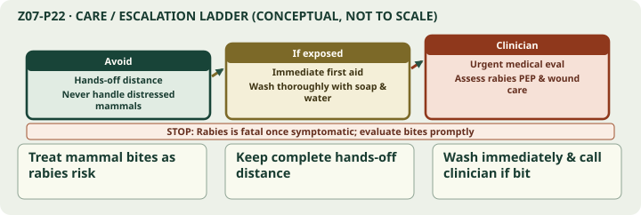

Z07-P22 · Traps and snares · New manuscript
Rabies, Bite and Claw Trauma Risks with Distressed Wildlife
Highlight high-consequence zoonotic and trauma hazards whenever handling or approaching cornered, sick, or entangled mammals.
When it applies · Any field encounter with injured, entangled, or abnormally behaving wild mammals.
Equipment · Soap and water if accidental exposure occurs; emergency medical and public-health contact.

Actions
- Recognize that skunks, bats, raccoons, foxes, and other wild mammals can transmit fatal rabies through bites or saliva entering scratches and mucous membranes.[L06, M17]
- Maintain complete hands-off distance from any injured, restrained, sluggish, or unusually tame wild animal rather than trying to comfort or transport it yourself.[L06, H11]
- If any bite, scratch, or saliva exposure occurs, wash the wound thoroughly with soap and running water immediately and seek urgent medical evaluation for rabies post-exposure prophylaxis and tetanus.[L06, M06, M17]
Failure recognition · Attempting to wrap a distressed skunk, fox, or bat in a jacket risks unnoticed scratches and fatal rabies if untreated.[L06, M17]
Verify · Zero direct handling occurs, and any accidental exposure triggers immediate thorough washing and medical evaluation.[L06, M17]
Stop or change course · Stop all contact and seek same-day clinical care after any wild-mammal bite, bat contact, or saliva-to-broken-skin exposure.[L06, M17]
Evidence and editorial notes
- H11 · CDC · About Tularemia and Wild Rabbit / Game Handling Precautions (2024)
- Section: Tularemia precautions with wild rabbits, hares, and rodents · Conditions: Field handling of small game and carcasses
Support: Wear impervious gloves when handling wild rabbits/rodents, avoid sick or sluggish animals, and cook meat thoroughly; bacteria can enter through skin breaks or aerosols.
Limitations: Do not handle found-dead wildlife; seek medical evaluation promptly for fever or skin ulcers after exposure. · Conflicting evidence: None noted.
Editorial note: Critical Z06 small-game zoonosis safety gate. · Specialist reviewer: Infectious-disease specialist
Primary source · checked 2026-11-25
Current assessment · A04-H11 (2026-11-25) · Bounded support newly confirmed (A04): Supports agency-level risk controls and routes. Remains a narrow public-health claim. No assessment or release for a specific animal or food item. Limits: Specialist review PENDING (Infectious-disease specialist); publication HOLD. All release decisions pending. - L06 · Minnesota DNR · Injured, Orphaned, or Trapped Wildlife Reporting (Current web edition)
- Section: Reporting injured, orphaned, or accidentally trapped wildlife · Conditions: Discovering a trapped or injured wild animal in the field
Support: Maintain safe distance to avoid bites, rabies, and stress to the animal; note GPS/location and contact a Conservation Officer or licensed wildlife rehabilitator.
Limitations: Never attempt barehanded release of distressed carnivores, raptors, or large mammals. · Conflicting evidence: None noted.
Editorial note: Establishes Z07 incidental-capture reporting protocol. · Specialist reviewer: Wildlife rehabilitator and DNR officer
Primary source · checked 2026-11-25 - M06 · NIH / MedlinePlus · Wounds and Injuries (current web edition)
- Section: Minor Wound Cleaning, Protection, and Infection Red Flags · Conditions: Superficial cuts, scrapes, and abrasions with potable water available
Support: Rinse minor wounds thoroughly with clean potable water, cover with a clean sterile dressing, and monitor for worsening redness, warmth, swelling, pus, red streaks, or fever.
Limitations: Deep punctures, animal bites, retained foreign bodies, or heavily contaminated wounds require clinical evaluation and tetanus review. · Conflicting evidence: None; separates clean potable rinsing from harsh chemical wound scrubbing.
Editorial note: Anchors field wound hygiene and infection escalation cards. · Specialist reviewer: Wilderness medicine and wound care
Primary source · checked 2026-11-24 - M17 · NIH / MedlinePlus · Dehydration (current web edition)
- Section: Dehydration Recognition, Oral Rehydration, and Red Flags · Conditions: Heat exertion, prolonged diarrhea, vomiting, or inadequate water intake
Support: Encourage small frequent sips of safe potable water or labeled oral rehydration solution in alert patients able to swallow; evacuate urgently for confusion, inability to keep fluids down, sunken eyes, or minimal dark urine.
Limitations: Severely dehydrated or altered patients cannot safely rehydrate by mouth alone. · Conflicting evidence: None; avoids unverified homemade salt-sugar ratio guesswork when labeled packets exist.
Editorial note: Links hydration monitoring to medical evacuation triggers. · Specialist reviewer: Wilderness medicine and internal medicine
Primary source · checked 2026-11-24
Source lineage · New manuscript (Z07 P18 medical safety) · Classification · New manuscript.